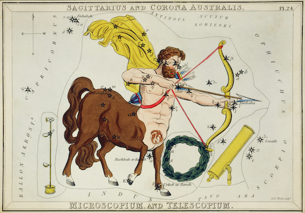
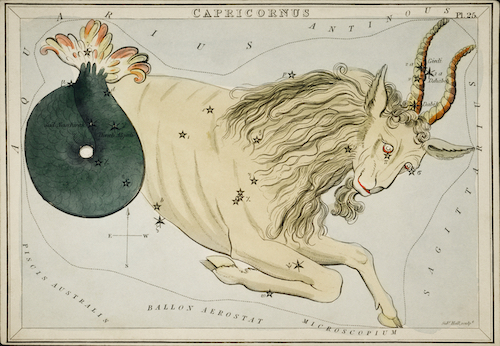

Sagittarius
The Archer: November 22-December 21

The ninth sign of the Zodiac, and the final fire sign, is Sagittarius, natural adventure seekers, this sign loves change and experiencing new things. Similar to Gemini, they are always seeking out new information, and experiences, making them above any other sign, the life of the party. These people are great story tellers, and entertainers, often known for being funny, they are skilled at captivating the attention of any group. However, they are known for being incredibly blunt, and their honesty can get them in trouble if it is at the expense of others feelings. But that doesn’t stop them, because their care free attitudes mean that they tend not to take anything too seriously, because to them, it was never that deep. They are ruled by the planet of Jupiter which represents abundance. This comes as no surprise as these people are always looking for the next best thing, and when they find something that intrigues them, they learn everything they can about it. That is until they become bored, as Sagittarius biggest challenge is consistency and sticking with routine.
Capricorn
The Sea-Goat: December 22-January 19

The tenth sign of the Zodiac, is Capricorn, an earth sign known for their hustle. If a Capricorn wants something, they are going to get it. Incredibly ambitious, this sign will not stop till they achieve what they set out for, no matter how many obstacles they have to overcome in the process, they are truly resilient. Due to their unmatched determination, Capricorns can come off as cold, and unemotional, but that’s because of their tendency to look at the big picture. Capricorns know that if something won’t matter 3 years down the line, then it is a waste of their time to care about it now, because of this they tend to lack sympathy for others problems. Ruled by the planet of Saturn, which is concerned with rules and time, Capricorns are very punctual and know how to organize their schedules to conquer what needs to be done in the time allotted. Said to age backwards, hidden beneath the surface of every Capricorn is a playful trouble maker, though it can be hard to tell as they come off as quite restrained.